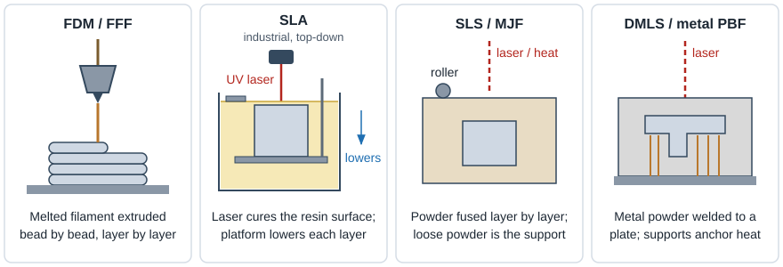
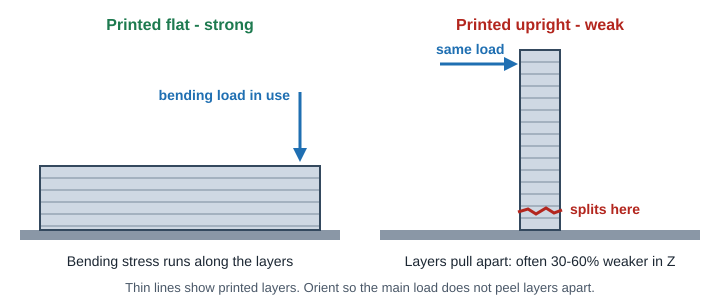

3D Printing
FDM vs SLA vs SLS vs MJF vs DMLS
Pick the process first, then design to its rules. This page compares the five processes you will quote most often, with ProtoLabs published values as the reference vendor.
How each process works

| Process | How it builds | Typical materials |
|---|---|---|
| FDM / FFF Fused deposition | A heated nozzle extrudes a thermoplastic bead, one layer at a time. Bond between layers is the weak point. | PLA, PETG, ABS, ASA, nylon, PC, TPU, ULTEM |
| SLA Stereolithography | A UV laser cures liquid photopolymer resin. Very fine layers and laser spot give the best detail and finish. | Standard, ABS-like, PC-like, PP-like, clear, high-temp, elastomeric resins |
| SLS Selective laser sintering | A laser sinters nylon powder. Unsintered powder holds the part, so no supports. | PA12, PA11, glass-filled PA, TPU |
| MJF Multi Jet Fusion | Inkjet heads print fusing agent on a powder bed, then heat fuses each layer. Faster and more uniform than SLS. | PA12, PA12 glass-filled, PA11, TPU |
| DMLS Direct metal laser sintering | A laser welds fine metal powder. Parts are anchored to a build plate with supports, then cut off and stress relieved. | AlSi10Mg, 316L, 17-4 PH, Ti-6Al-4V, Inconel 718/625, cobalt chrome |
PolyJet jets and UV-cures droplets of resin, so it can mix rigid and rubber-like materials (and color) in one part. Good for overmold look-alike prototypes. Carbon DLS is a continuous resin process with production-grade urethanes and elastomers. Both are offered by ProtoLabs and other service bureaus.
Process comparison table
Use these as design starting values. A feature drawn at the minimum is not guaranteed to form or survive cleanup, so add margin where you can.
| Property | FDM | SLA | SLS | MJF | DMLS |
|---|---|---|---|---|---|
| Layer height | 0.1-0.3 mm | 0.025-0.1 mm | ~0.1 mm | ~0.08 mm | 0.02-0.06 mm |
| Typical tolerance | ±0.2-0.5 mm (±0.008-0.020 in), printer dependent | ±0.05 mm XY, ±0.13 mm Z (±0.002 / ±0.005 in) +0.1% of size | ±0.25 mm (±0.010 in) +0.1% of size | ±0.30 mm (±0.012 in) +0.1% of size | ±0.076 mm XY, ±0.15 mm Z (±0.003 / ±0.006 in) +0.1% of size |
| Min wall | 0.8 mm min, 1.2 mm+ preferred | 0.4 mm supported, 0.6 mm unsupported, 1 mm preferred | 0.8 mm (PA12), 2 mm filled | 0.8 mm min, 2.5-4 mm ideal | 0.4-1.0 mm, 1 mm preferred |
| Min hole / gap | ~2 mm hole, 0.5 mm gap | ~0.64 mm (0.025 in); smaller can seal shut | 0.8 mm (0.030 in) gap, 1.5 mm hole | 0.8 mm gap, 1.5 mm hole | ~1 mm hole |
| Supports | Yes under 45° | Yes always some | No powder bed | No powder bed | Yes cut off by machining / EDM |
| Surface as-built | Visible layer lines | Smoothest, near-molded | Matte, slightly grainy | Grainy, usually dyed gray/black | Rough, usually blasted or machined |
| Strength / isotropy | Anisotropic, weak in Z | Near isotropic, can be brittle, creeps and ages in UV | Tough, fairly isotropic | Tough, most isotropic polymer option | Near-wrought metal properties after heat treat |
| Cost / speed | Lowest cost, slow per part | Low-moderate, fast for small parts | Moderate, economical in batches | Moderate, fastest for nylon batches | Highest, slow, plus post-processing |
| Best for | Concept models, fixtures, large simple parts | Show models, fine detail, smooth fit-check parts, casting masters | Functional prototypes, snap fits, complex ducts | Functional and low-volume production nylon parts | Complex metal parts, conformal cooling, part consolidation |
SLA, SLS, MJF and DMLS tolerances are ProtoLabs published values (base value plus 0.1% of nominal, i.e. +0.001 in/in). FDM is a general industry range. Tolerances also depend on geometry, orientation and material.

Process selection guide
| If you need... | Choose | Why |
|---|---|---|
| Cheap, fast form check or shop fixture | FDM | Lowest cost; strength is fine if you orient for load |
| Smooth cosmetic surface or tiny detail | SLA | Finest layers and best finish; paints well |
| Clear or translucent part (light pipe, flow viewing) | SLA clear resin | Only common process that can be polished near-clear |
| Snap fits, living hinges, impact loads | SLS or MJF (PA11 for most ductility) | Real thermoplastic nylon, tough and fatigue resistant |
| Internal channels, ducts, lattices, no support access | SLS or MJF | Powder supports everything; only need powder escape holes |
| 50-1,000+ nylon parts without tooling | MJF | Dense nesting and fast builds lower unit cost |
| Rubber-like part | SLS/MJF TPU, SLA elastomer, or Carbon DLS | Choose by hardness and durability needed |
| Metal part too complex to machine | DMLS | Internal passages, organic shapes, consolidated assemblies |
| Metal part that CAN be machined | CNC machining | Usually cheaper, faster and more accurate than DMLS |
| High temperature plastic | FDM ULTEM, SLA high-temp resin, or machined PEEK/PEI | Check heat deflection temperature for your load |
3D printing vs CNC machining for plastic parts
Machining wins when...
- You need a specific engineering plastic (acetal, PEEK, PC, UHMW...). Machining offers far more grades than printing.
- Accuracy and long-term dimensional stability matter. Machined parts beat SLA, which can creep and change over time.
- The part is headed to injection molding. Same material family, and machinable geometry usually translates to a mold more easily.
- Surface finish must be good on functional faces. SLS is rougher than machined or SLA surfaces.
Printing wins when...
- Geometry cannot be reached by a cutter: internal channels, hollow shells, lattices, a whiffle-ball-like part.
- Most of the block would be cut away (rings, frames, thin shells). Printing only adds the material needed.
- You want several iterations in days and the material properties are "close enough".
- Part consolidation removes fasteners and assembly steps.
If a 3-axis mill can make it in one or two setups, quote machining too. If the design only works because of internal features, print it and machine the critical faces afterward.
ProtoLabs: Understanding 3D Printing Tolerances, 7 Mistakes to Avoid When Designing 3D Printed Parts, Designing a Part for Multi Jet Fusion, ProtoLabs Design Essentials for CNC Machining (3D printing vs machining chapter). Protolabs Network (Hubs): How to design parts for SLS.